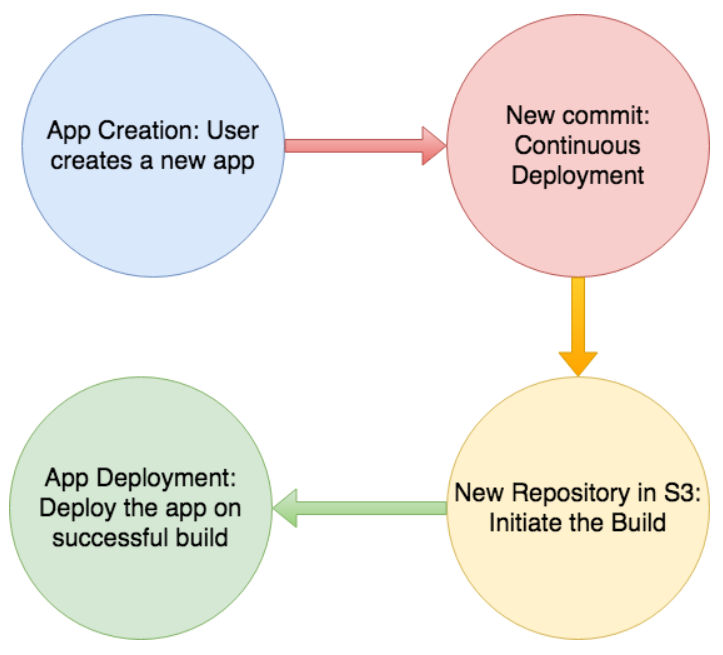

Keval Khara
menu
About Me
Projects
Blogs
About Me
Projects
Blogs
BLOGS

Orchestration Platform for Apps at Viasat
August 2018
A next-generation orchestration platform for 12-factor apps at Viasat, to meet the need for a simple platform to run general-purpose (e.g. web) apps with little operational overload.
Kubernetes
Docker
AWS
Golang
PostgreSQL
Ethical Dilemmas in Machine Learning
December 2017
As we are moving closer to the point of Technological Singularity, there is a growing need to build safer, reliable and ethical Artificial Intelligence Systems.
Computer Vision
Machine Learning
Ethics in AI